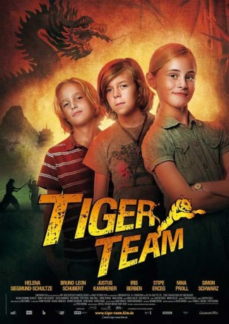
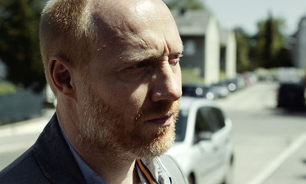
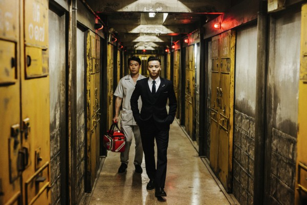

#9989 Tiger Team - Der Berg der 1000 Drachen
 
 IMDB-Wertung: 4.6 / 10
IMDB-Wertung: 4.6 / 10  Metascore: 0
Metascore: 0 
Als die Wiener Kinderdetektive Biggi, Patrick und Luk auf einen Schlüssel in Drachenform stoßen, ist ihre Neugier geweckt. Per Internet kommen sie einem chinesischen Mythos auf die Spur, der die drei bis ins ferne Peking führt. Dort müssen sie erkennen, dass auch die finstere Lady Q daran interessiert ist, den sagenumwobenen Mondscheinpalast zu öffnen. Darin wird ein Elixier vermutet, das ewige Jugend verspricht. Jetzt müssen die Tiger verhindern, dass Lady Q in den Besitz der unschätzbar wertvollen Flüssigkeit gelangt.
Jahr: 2010
Dauer: 88 Minuten
FSK: 6
Land: Deutschland Studio: Constantin FilmTonspuren:
Untertitel:
Auflösung: 1080p (1920x1040) Größe: 9246 MB
Genre: Abenteuer, Familie
Regisseur: Peter Gersina
Drehbuch: Thomas Brezina, Peter Gersina, Thomas Brezina
Soundtrack: Andrej Melita, Siggi Mueller
Darsteller:
 Iris Berben als Lady Q
Iris Berben als Lady Q- Stipe Erceg als Munroe
-  Simon Schwarz als Krops
- Jimmy Taenaka als Herr Bai
-  Jin Zhang als
 Martin Umbach als Li
Martin Umbach als Li- Helena Siegmund-Schultze als Biggi
- Bruno Schubert als Patrick
- Justus Kammerer als Luk
- Deshun Wang als Cheng
- Nina Proll als Frau Papus
- Xu Feng Nian als Li
- Lilin Wong als Frau Bai
- Soogi Kang als Cousine Mae
- Zhang Wei als Wang
- Kim Dung als Mea-Ling
- Inge Maux als
- Chris Muchsel als
- Martin Exel als
- Boris Hanreich als
- Heiko Kiesow als
- Ngoc Duong Yen als
- Minh-Thuan als
- Binh Le als
- Kim Quyen als
- Vu Huan als
- Kim Ngoc Le als
- Pham Cu als
- Ngo Trong als
- Ho Van Tin als
- Huynh Chu als
- Duong Thi Dao als
- Duy Anh als
- Le Van Mai als
- Le Minh Quan als
- Tuyet Dung als
- Tran Thi Ngoc Anh als
- Phan Huynh Thanh Tuan als
- Chen Yu Ke als
- Nhan Thanh Toan als
- Zhan Yu als
- Zhong Ai Lin als
- Jiang Shi Zhuo als
- Elaine Hao als
- Chen Jian Fei als
- Du Cheng Guo als
- Jinbo Bai als
- Sheng Zhi als
- Du Song als
- Phan Quoc Hoanh als
Datei: X:\2010(N-Z)\Tiger Team - Der Berg der 1000 Drachen (2010, FSK6, 1920x1040).mkv seit 15.11.2018
Festplatte: HD 2010(G-Z)-2011(A-F)
 Es gibt insgesamt 115 Filme in der Gruppe '2010(N-Z)'
Es gibt insgesamt 115 Filme in der Gruppe '2010(N-Z)'